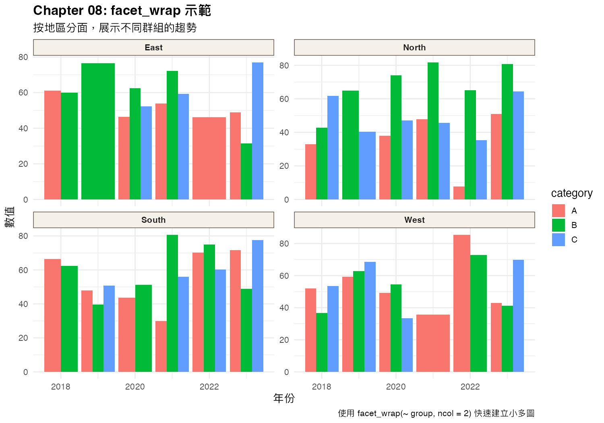

分面（facet）可以把資料按照某個變數分成多個小圖。
常見用法：
facet_wrap(~ category) — 一維分面facet_grid(row ~ col) — 二維分面patchwork 套件 — 手動排版多圖下面這張圖展示了 facet_wrap 的使用：

scales = "free" 會讓每個小圖有自己的 y 軸範圍，容易誤導讀者。
facet_wrap() 把資料按照「年份」分成多個小圖。facet_grid() 做出「年份 × 類別」的二維分面。patchwork 手動排版三張圖成 2×2 的版面。下一章：視覺化倫理與常見陷阱